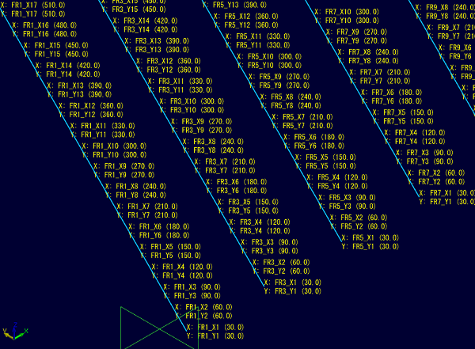
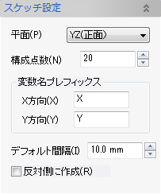
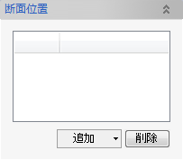
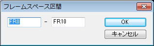
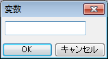

指示された断面上にスケッチ平面を作成し、変数で制御可能な構成点とスプライン曲線を定義します。

スケッチ設定パラメータと断面位置を入力し、OKボタンでスケッチ平面群を作成します。

スケッチの基準となる平面を選択します。
スプライン曲線を構成する点数を入力します。
スケッチの座標値を表す変数のプレフィックスを指示します。
実際の変数名は「断面の変数名」_「XまたはY方向のプレフィックス」_「連番（1...）」となります。
スケッチ点間の間隔を入力します。
通常、スプライン曲線は(-X)(+Y)方向に作成されますが、このオプションをチェックすると(+X)(+Y)方向に作成されます。
点座標は、変数値とX座標値拘束、Y座標値拘束によって定義されます。
変数値を変更することで、スプライン曲線の形状を変形させることができます。

断面位置となる変数を指定します。
区間ダイアログで変数範囲を指定し、範囲内ある変数を一括でリストに追加します。
スケッチ設定の平面によって指定できる変数が変わります。
変数ダイアログで変数を指定し、リストに追加します。新規変数を定義するもできます。
リスト上で選択されている変数をリストから削除します。
この他にも、区間の指定方法として、モデル構成ウィンドウ上の変数や要素グループフォルダを選択して追加することができます。
モデル構成ウィンドウで変数を選択し、コンテキストメニューで追加します。
モデル構成ウィンドウで要素グループを選択し、コンテキストメニューで追加します。